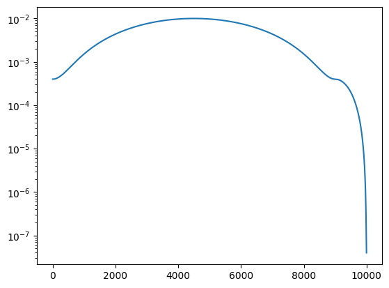

an example¶
[333]:
from dataclasses import dataclass
[268]:
# %load_ext autoreload
# %autoreload 2
import torch
from torch import nn
torch.set_default_dtype(torch.float64)
import pandas as pd
from scipy import stats
from functools import partial
import matplotlib.pyplot as plt
import matplotlib
matplotlib.use("TkAgg")
%matplotlib inline
from jarvis.db.figshare import data as jdata
from nfflr.data import graph
from nfflr.data.dataset import AtomsDataset
from nfflr.data.graph import periodic_adaptive_radius_graph, periodic_radius_graph
from nfflr.models.gnn import tfm
cutoff = 8.0
# d = AtomsDataset(pd.DataFrame(jdata("dft_3d")))
d = AtomsDataset(
# "examples/ff/mpf-subset-2.jsonl",
"examples/mp3/mpf-2.jsonl",
target="energy_and_forces",
energy_units="eV/atom",
transform=partial(periodic_adaptive_radius_graph, r=cutoff, dtype=torch.get_default_dtype())
# transform=partial(periodic_adaptive_radius_graph, r=5.0, dtype=torch.get_default_dtype())
)
# d = AtomsDataset(
# "examples/mlearn/mlearn.json",
# target="energy_and_forces",
# energy_units="eV",
# transform=partial(periodic_adaptive_radius_graph, r=cutoff)
# )
reference_energies = d.estimate_reference_energies()
# model_cfg = alignn_ff.ALIGNNConfig(
# cutoff=cutoff,
# cutoff_onset=None,
# alignn_layers=0,
# gcn_layers=4,
# atom_features="embedding",
# compute_forces=True,
# energy_units = "eV",
# # reference_energies=reference_energies,
# )
model_cfg = tfm.TFMConfig(
cutoff=8,
cutoff_onset=None,
# cutoff_onset=7.5,
layers=3,
atom_features="embedding",
compute_forces=True,
energy_units = "eV",
# reference_energies=reference_energies,
)
model = tfm.TFM(model_cfg)
dataset_name='examples/mp3/mpf-2.jsonl'
loading from a checkpoint¶
[269]:
ckpt = torch.load("examples/mp3/checkpoint_200.pt", map_location=torch.device('cpu'))
[270]:
model.load_state_dict(ckpt["model"])
[270]:
<All keys matched successfully>
[271]:
d.split["val"]
[271]:
array([ 12, 13, 14, ..., 187416, 187417, 187418])
[338]:
@dataclass
class Perf():
et: torch.Tensor
ep: torch.Tensor
ft: torch.Tensor
fp: torch.Tensor
[340]:
pval = Perf(et=et, ep=ep, ft=fst, fp=fsp)
[343]:
et, ep = [], []
ft, fp = [], []
for idx in d.split["train"][:1000]:
g, t = d[idx]
p = model(g)
et.append(t["energy"] / g.num_nodes())
ep.append(p["total_energy"] / g.num_nodes())
ft.append(t["forces"].detach())
_fp = p["forces"].detach()
if _fp.ndim == 1:
_fp = _fp.unsqueeze(0)
fp.append(_fp)
ptrain = Perf(
et = torch.stack(et).detach(),
ep = torch.stack(ep).detach(),
ft = torch.vstack(ft),
fp = torch.vstack(fp),
)
/Users/bld/.pyenv/versions/3.10.9/envs/nfflr/lib/python3.10/site-packages/dgl/backend/pytorch/tensor.py:445: UserWarning: TypedStorage is deprecated. It will be removed in the future and UntypedStorage will be the only storage class. This should only matter to you if you are using storages directly. To access UntypedStorage directly, use tensor.untyped_storage() instead of tensor.storage()
assert input.numel() == input.storage().size(), (
[344]:
et, ep = [], []
ft, fp = [], []
for idx in d.split["val"][:1000]:
g, t = d[idx]
p = model(g)
et.append(t["energy"] / g.num_nodes())
ep.append(p["total_energy"] / g.num_nodes())
ft.append(t["forces"].detach())
_fp = p["forces"].detach()
if _fp.ndim == 1:
_fp = _fp.unsqueeze(0)
fp.append(_fp)
pval = Perf(
et = torch.stack(et).detach(),
ep = torch.stack(ep).detach(),
ft = torch.vstack(ft),
fp = torch.vstack(fp),
)
/Users/bld/.pyenv/versions/3.10.9/envs/nfflr/lib/python3.10/site-packages/dgl/backend/pytorch/tensor.py:445: UserWarning: TypedStorage is deprecated. It will be removed in the future and UntypedStorage will be the only storage class. This should only matter to you if you are using storages directly. To access UntypedStorage directly, use tensor.untyped_storage() instead of tensor.storage()
assert input.numel() == input.storage().size(), (
[345]:
plt.scatter(pval.et, pval.ep)
[345]:
<matplotlib.collections.PathCollection at 0x2bb117f40>

[378]:
fig, axes = plt.subplots(ncols=3, figsize=(12,4))
def pseudolog10(x):
return torch.asinh(x / 2) / np.log(10)
plt.sca(axes[0])
plt.plot([-2, 2], [-2, 2], color="k", linestyle="--")
# plt.scatter(pseudolog10(ptrain.ft), pseudolog10(ptrain.fp), alpha=0.25)
plt.scatter(ptrain.ft, ptrain.fp, alpha=0.25)
plt.xlabel(r"$\mathrm{pseudolog}_{10}(F_i)$")
plt.ylabel(r"$\mathrm{pseudolog}_{10}(\hat{F}_i)$")
plt.xlim(-5, 5)
plt.ylim(-5, 5)
plt.sca(axes[1])
dcos = 1 - torch.nn.functional.cosine_similarity(ptrain.ft, ptrain.fp)
magt = torch.norm(ptrain.ft, dim=-1)
magp = torch.norm(ptrain.fp, dim=-1)
plt.scatter(magt, magp, c=dcos, alpha=0.25, cmap="inferno")
plt.loglog()
plt.plot([1e-6, 100], [1e-6, 100], color="k", linestyle="--")
plt.xlabel(r"$|F|$")
plt.ylabel(r"$|\hat{F}|$")
plt.axvline(1, color="k", linestyle="--")
plt.colorbar()
plt.sca(axes[2])
plt.hist(dcos, bins=100, density=True);
plt.xlabel(r"$d_{cos}(F, \hat{F})$")
plt.tight_layout()

[375]:
fig, axes = plt.subplots(ncols=3, figsize=(12,4))
def pseudolog10(x):
return torch.asinh(x / 2) / np.log(10)
plt.sca(axes[0])
plt.plot([-2, 2], [-2, 2], color="k", linestyle="--")
plt.scatter(pseudolog10(pval.ft), pseudolog10(pval.fp), alpha=0.25)
plt.xlabel(r"$\mathrm{pseudolog}_{10}(F_i)$")
plt.ylabel(r"$\mathrm{pseudolog}_{10}(\hat{F}_i)$")
plt.sca(axes[1])
dcos = 1 - torch.nn.functional.cosine_similarity(pval.ft, pval.fp)
magt = torch.norm(pval.ft, dim=-1)
magp = torch.norm(pval.fp, dim=-1)
plt.scatter(magt, magp, alpha=0.25, c=dcos, cmap="inferno")
plt.loglog()
plt.plot([1e-6, 100], [1e-6, 100], color="k", linestyle="--")
plt.xlabel(r"$|F|$")
plt.ylabel(r"$|\hat{F}|$")
plt.axvline(1, color="k", linestyle="--")
plt.colorbar()
plt.sca(axes[2])
sel = torch.norm(pval.ft, dim=-1) > 0
dcos = 1 - torch.nn.functional.cosine_similarity(pval.ft[sel], pval.fp[sel])
plt.hist(dcos, bins=100, density=True);
plt.xlabel(r"$d_{cos}(F, \hat{F})$")
plt.tight_layout()

[351]:
def ecdf_plot(inputs, targets, quantiles=[0.5, 0.8, 0.95], annotate=True, label=None, axis=None):
if axis is None:
fig, ax = plt.subplots(figsize=(5,5))
else:
ax = axis
_y = np.arange(0, 101)
ecdf = np.percentile((inputs - targets).abs(), _y)
ax.plot(ecdf, _y/100, label=label)
ax.set_ylim(0, 1.0)
if not annotate:
return ax
for q in quantiles:
v = np.percentile((inputs - targets).abs(), 100 * q)
ax.plot([1e-16, v], [q, q], linestyle="--", color="k")
ax.annotate(f"{v:.03f}", xy=(1.3 * v, q), va="center")
return ax
[360]:
ax = ecdf_plot(torch.norm(ptrain.fp, dim=-1), torch.norm(ptrain.ft, dim=-1), annotate=False, label="train")
ax = ecdf_plot(torch.norm(pval.fp, dim=-1), torch.norm(pval.ft, dim=-1), axis=ax, label="val")
ax.semilogx()
ax.set_xlim(1e-9, None)
ax.set_xlabel("force norm error (eV/AA)");
ax.set_ylabel("probability")
ax.legend(loc="lower right");

[312]:
_y = np.arange(0, 101)
ecdf = np.percentile((magt - magp).abs(), _y)
fig, ax = plt.subplots(figsize=(5,5))
ax.plot(ecdf, _y/100)
for pct in (50, 80, 95):
vmed = np.percentile((magt - magp).abs(), pct)
ax.plot([1e-16, vmed], [pct/100, pct/100], linestyle="--", color="k")
ax.annotate(f"{vmed:.03f}", xy=(1.3 * vmed, pct/100), va="center")
ax.semilogx()
ax.set_xlim(1e-9, None)
ax.set_ylim(0, 1.0)
ax.set_xlabel("force norm error (eV/AA)");
ax.set_ylabel("probability")
[312]:
Text(0, 0.5, 'probability')

[327]:
_y = np.arange(0, 101)
ecdf = np.percentile((et - ep).abs(), _y)
fig, ax = plt.subplots(figsize=(5,5))
ax.plot(ecdf, _y/100)
for pct in (50, 80, 95):
vmed = np.percentile((et - ep).abs(), pct)
ax.plot([1e-6, vmed], [pct/100, pct/100], linestyle="--", color="k")
ax.annotate(f"{vmed:.03f}", xy=(1.3 * vmed, pct/100), va="center")
# ax = ecdf_plot(ep, et)
ax.semilogx()
ax.set_xlim(1e-6, None)
ax.set_ylim(0, 1.0)
ax.set_xlabel("energy error (eV/at)");
ax.set_ylabel("probability")
[327]:
Text(0, 0.5, 'probability')

[356]:
ax = ecdf_plot(ptrain.ep, ptrain.et, annotate=False, label="train")
ax = ecdf_plot(pval.ep, pval.et, label="val", axis=ax)
ax.semilogx()
ax.set_xlim(1e-6, None)
ax.set_ylim(0, 1.0)
ax.set_xlabel("energy error (eV/at)");
ax.set_ylabel("probability")
ax.legend(loc="lower right");

[358]:
ax = ecdf_plot(ptrain.fp, ptrain.ft, annotate=False, label="train")
ax = ecdf_plot(pval.fp, pval.ft, label="val", axis=ax)
ax.semilogx()
ax.set_xlim((1e-6, 10))
ax.set_ylim(0,1)
ax.set_xlabel("force error ($eV/\mathrm{\AA}$)")
ax.set_ylabel("probability");
ax.legend(loc="lower right");

[134]:
plt.hist(1 - torch.nn.functional.cosine_similarity(fst, fsp), bins=100);

[309]:
plt.plot([-2, 2], [-2, 2], color="k", linestyle="--")
plt.scatter(pseudolog10(fst), pseudolog10(fsp))
plt.xlabel(r"$\mathrm{pseudolog}_{10}(F_i)$")
plt.ylabel(r"$\mathrm{pseudolog}_{10}(\hat{F}_i)$")
[309]:
Text(0, 0.5, '$\\mathrm{pseudolog}_{10}(\\hat{F}_i)$')

[48]:
optimizer = torch.optim.SGD(model.parameters(), lr=0.1, momentum=0.9)
scheduler = torch.optim.lr_scheduler.OneCycleLR(
optimizer, max_lr=0.01, pct_start=0.45, steps_per_epoch=100, epochs=100,
three_phase=True, # final_div_factor=0.5
)
lrs = []
for step in range(100 * 100):
lrs.append(scheduler.get_last_lr()[0])
scheduler.step()
[51]:
plt.plot(lrs)
plt.semilogy()
[51]:
[]

[22]:
plt.plot(lrs)
# plt.semilogy()
[22]:
[<matplotlib.lines.Line2D at 0x2c5939810>]

[ ]: